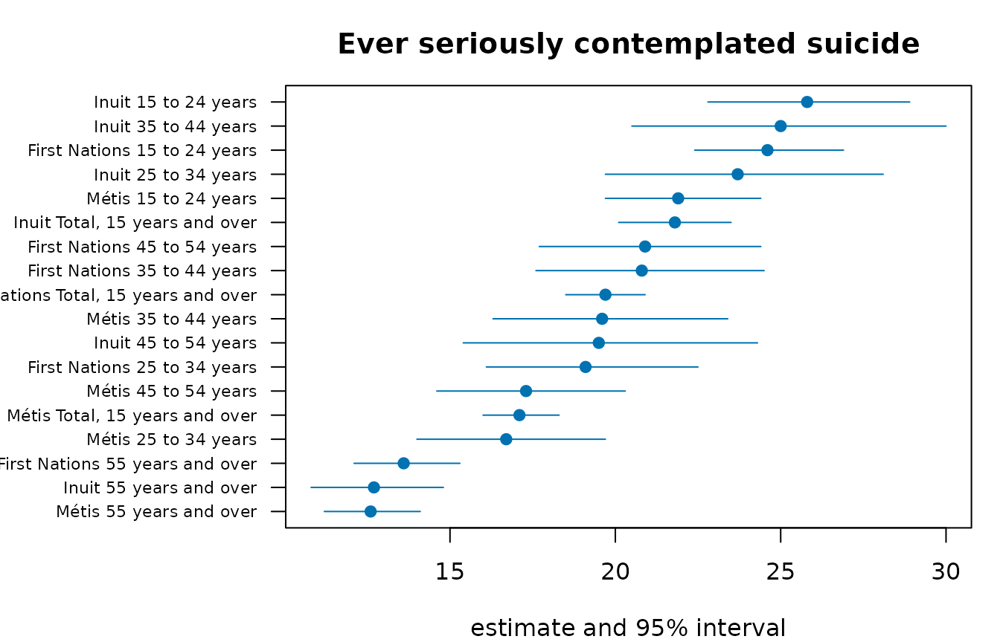

Hashing, keyed digests, key derivation and Merkle trees
Source:vignettes/hashing-and-integrity.Rmd
hashing-and-integrity.RmdEverything a capsule pins is pinned by a digest. This vignette covers the hashing primitives, how to compare digests safely, how to derive a key from a passphrase, how to get randomness, and how a Merkle tree lets a large file be pinned and partially verified.
Digests of text and files
csha256("hello capsule")
#> [1] "97cdf3978fc8755453e42fb3d0384a6612f1dde79c46cf422abc0563cf8426e2"
csha512("hello capsule")
#> [1] "aa92b1aa2bf977ec1c4b3a47795d24e98ab595464236b9c59696c1999794714639df0fa5e66fb7be86bf2d05e4a45b6207a40fc4ae1f3458ca40ceed87a9d76e"
cblake2b("hello capsule")
#> [1] "061431a711a23d1745664ba6d36ad517ab6f48db421d492f13cd110f2067b9ce"
ccrc32("hello capsule")
#> [1] 1607001718Files are hashed in blocks, so a multi-gigabyte file does not need to fit in memory:
f <- tempfile()
writeLines("hello capsule", f)
sha256file(f)
#> [1] "55d6110230c260319d580bb6274db530b7e751c4f687fc00d0736ec531260a02"
sha512file(f)
#> [1] "358665f1505b7dced4ab0e1d7cf5b634bc60f8cbdf7c59f8ec6957f8e1a0df990fbaf92e6dc662662cca542e475b0862453a932d9fa58c2bc7a4b3de8cecdfc4"
crc32file(f)
#> [1] 2347637372
before <- sha256file(f)
writeLines("hello capsule (edited)", f)
sha256file(f) == before
#> [1] FALSECRC-32 is a checksum, not a cryptographic hash: it detects accidental
corruption and nothing more. SHA-256 and SHA-512 (FIPS 180-4) and
BLAKE2b are collision-resistant; vrfsha256() checks a file
against a pinned digest.
Digests of R objects
dgstobj() serialises an object canonically and hashes
the bytes, so attributes, names and types are part of the identity:
dgstobj(list(a = 1L, b = "x"))
#> [1] "bf5d21a8b26f6cec8503a46f69e854bf98fea03b62dfaf90cb780feac7165b27"
identical(dgstobj(1:10), dgstobj(1:10))
#> [1] TRUE
dgstobj(1:10) == dgstobj(1:11)
#> [1] FALSE
dgstobj(matrix(1:6, nrow = 2)) == dgstobj(1:6) # dimensions count
#> [1] FALSE
dgstobj(data.frame(x = 1:3))
#> [1] "24b0995a368ea8d1178b7f6e44c6d8956db4aadfc91d3e6f6911868b38c06d21"Keyed digests and constant-time comparison
An HMAC (RFC 2104) is a digest that only the holder of the key can produce, so a manifest cannot be re-signed without the key:
chmac("Jefe", "what do ya want for nothing?") # RFC 4231 test case 2
#> [1] "5bdcc146bf60754e6a042426089575c75a003f089d2739839dec58b964ec3843"
chmac("key-a", "manifest")
#> [1] "463b8b2c47caadd6334c53e4d9492fdac6fcaca185f56229043e1a025138ceae"
chmac("key-b", "manifest")
#> [1] "f3ebaf1b8fad504c57fd4cf82b163e30eac6eabd31b7c41a2a6e268ec445b134"Never compare a tag with ==. A string
comparison stops at the first differing character, so its running time
tells an attacker how many leading characters were right.
cdgsteq() compares every byte regardless and returns
FALSE for a length mismatch without erroring:
Deriving a key from a passphrase
A passphrase is not a key: it is short, low-entropy and chosen by a person. PBKDF2 (RFC 8018) stretches it with a salt and an iteration count that makes each guess expensive:
drvkey("password", "salt", iter = 1) # the published test vector
#> [1] "120fb6cffcf8b32c43e7225256c4f837a86548c92ccc35480805987cb70be17b"
identical(drvkey("pw", "s", 1000), drvkey("pw", "s", 1000))
#> [1] TRUE
drvkey("pw", "salt-a", 1000) == drvkey("pw", "salt-b", 1000)
#> [1] FALSEThe salt must be random and stored beside the ciphertext or signature; the default of 100,000 iterations is the floor for interactive use. A derived key signs a manifest symmetrically:
Randomness
rndbytes() draws from the operating system
(getrandom or /dev/urandom on Unix,
RtlGenRandom on Windows) and does not
consume R’s seeded stream, so a reproducible analysis is unaffected by
key generation happening beside it:
set.seed(1)
a <- stats::runif(1)
set.seed(1)
invisible(rndbytes(32))
identical(stats::runif(1), a)
#> [1] TRUEFor tests that need reproducible “random” bytes, the package’s AES-256 CTR_DRBG (SP 800-90A) gives the same bytes from the same seed, exactly as NIST’s known-answer files use it; a personalization string separates streams:
Merkle trees: pin a large file, verify a piece
A Merkle tree hashes a file in chunks, then hashes pairs of digests
up to one root. The root pins the whole file; a proof of
log2(n) digests shows that one chunk belongs without
holding the others, and a diff of the leaves names exactly which chunk
changed.
chunks <- c("row1,row2", "row3,row4", "row5,row6", "row7,row8")
root <- mrkroot(chunks)
root
#> [1] "3b1537c90e21c2e66f341b946388abbb78bf249fb433f961fba223b67141be31"
before <- mrklvs(chunks)
after <- mrklvs(c(chunks[1:2], "row5,row6-EDITED", chunks[4]))
which(before != after)
#> [1] 3
pr <- mrkprf(chunks, 3)
mrkvrf(chunks[3], pr, root)
#> [1] TRUE
mrkvrf("row5,row6-EDITED", pr, root)
#> [1] FALSEchnkfile() splits a real file into fixed-size chunks
that concatenate back to its bytes:
p <- tempfile()
writeLines(rep("some capsule content", 50), p)
ch <- chnkfile(p, chnkbytes = 128)
length(ch)
#> [1] 9
mrkroot(ch)
#> [1] "3f565b39becbebbc336618294525d7a1ff45394d68ecaec899d292bb0fd357c1"
identical(unlist(ch), readBin(p, "raw", file.size(p)))
#> [1] TRUEcpsbndl() pins each data file by one whole-file digest
(sha256file()); the Merkle tree is for pinning the parts of
a large file, so a mismatch identifies which part of it changed rather
than only that something did.
How these implementations are checked
The digests are compared with OpenSSL at every block boundary, run against the NIST ACVP sets for SHA-3, SHAKE, HMAC and PBKDF2, and fuzzed differentially against OpenSSL 3.5. The keyed-digest comparison and PBKDF2 run under valgrind with the key marked undefined to prove their timing does not depend on it, and dudect measures the comparison and PBKDF2 on real CPUs.
Pinning a community’s copy of a table
Ownership and control of data, in the sense of the First Nations principles of OCAP, include knowing that a copy has not been altered. A digest of the table and a Merkle root over its rows let a community check its copy, and check single rows without the rest:
The pinned table in a picture
The digests above pin this table. Its estimates and intervals for the first measure are drawn here: a reader who verifies the digest is looking at exactly these numbers.
ci_plot <- function(t, lab, main) {
o <- order(t$estimate)
t <- t[o, ]
y <- seq_len(nrow(t))
op <- par(mar = c(4, 10, 3, 1))
on.exit(par(op))
plot(t$estimate, y, xlim = range(t$lower, t$upper, na.rm = TRUE), yaxt = "n", pch = 19,
col = blpal()[1], xlab = "estimate and 95% interval", ylab = "", main = main)
segments(t$lower, y, t$upper, y, col = blpal()[1])
axis(2, y, lab[o], las = 1, cex.axis = 0.7)
}
t1 <- d[d$measure == d$measure[1], ]
ci_plot(t1, paste(t1$group, t1$age), t1$measure[1])